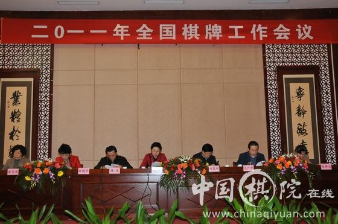

2011年全国棋牌工作会议召开
#1 2011年全国棋牌工作会议召开 作者：被感动的人 发表时间：2011-1-19 16:58:19
转载自中国连珠网

中国棋院在线讯2011年全国棋牌工作会议于1月18日在湖北咸宁开幕。本次会议的主题是：总结经验、面向未来，以科学发展观为统领，科学规划“十二五”时期棋牌事业的发展，努力建设棋牌强国。
会上，国家体育总局局长助理晓敏做了题为《抓住机遇，迎接挑战，扎实推动棋牌强国建设迈出新步伐》的讲话，全面回顾和总结了“十一五”期间我国棋牌运动所取得的成就和经验；深刻论述了在中央“十二五”规划开局阶段中国体育界所面临的新形势、新目标，为下一周期棋牌事业如何更好更快地发展指明了方向。
总局棋牌运动管理中心主任刘思明做了题为《面向未来，科学规划，坚持走棋牌强国建设之路》的工作报告，在回顾和总结2010年棋牌工作经验的基础上，进一步明确了2011年全国棋牌届所面临的主要任务和工作开展的基本思路。
为感谢和鼓励近年来对棋牌事业做出积极贡献的地方**、棋牌运动管理部门、从事普及工作的基层组织及企业和新闻单位，总局棋牌中心拟面向全国棋牌行业开展表彰工作，为使此项工作更加科学规范和符合实际，在本次会议上将就《全国棋牌优秀工作单位表彰办法》和《全国棋牌工作优秀单位表彰工作实施细则》两个办法广泛征求意见。总局棋牌中心党委书记褚波在开幕式上做了两个办法的起草说明。
北京棋院、山东省棋类中心、新疆体育总会以及湖北省棋牌中心的代表做了典型发言，分别介绍了本地区、本单位棋牌运动开展的情况和特色。
大会由总局棋牌中心副主任范广升主持，湖北省体育局副局长林晓华致欢迎词。棋牌中心副主任陈泽兰及国家体育总局青少司副巡视员黄美荣出席了会议。参会的还有来自全国各省、自治区、直辖市、计划单列市及有关行业体协的棋牌管理工作者，及长期支持棋牌事业的企业界代表和新闻界人士约120人。
在接下来两天的分组讨论中，与会代表将就地方棋牌工作经验与第二届全国智运会筹办参赛情况进行交流，就《全国棋牌优秀工作单位表彰办法》、《全国棋牌工作优秀单位表彰工作实施细则》(征求意见稿)和如何科学地设置棋牌项目全国综合性和单项赛事进行讨论。(车宇)
（责任编辑:陈楠）
［此帖子已被 被感动的人 在 2011-1-19 17:00:55 编辑过］
［ 掌棋宣传员 于 2011-1-19 21:24:57 时花20金币送鲜花一朵］
［ 梦婷 于 2011-1-19 22:29:06 时花20金币送鲜花一朵］
［ 茗弈七夜 于 2011-1-20 11:53:20 时花20金币送鲜花一朵］
#2 Re:2011年全国棋牌工作会议召开 作者：被感动的人 发表时间：2011-1-19 16:59:01
抓住机遇，迎接挑战扎实推动棋牌强国建设迈出新步伐
——晓敏同志在全国棋牌工作会议上的讲话
同志们：
在2011年全国体育局长会议刚刚召开之后，今天我们就在湖北咸宁召开全国棋牌工作会议，非常及时，也很重要。首先，我谨代表国家体育总局向出席会议的全体同志表示热烈的欢迎；向长期以来为促进我国棋牌事业发展辛勤工作、做出贡献的各位同仁表示最诚挚的敬意！向承办本次会议的湖北省体育局和棋牌管理中心的领导和同志们表示衷心的感谢！
新的一年拉开了新的历史发展帷幕。2011年是体育事业“十二五”规划的开局之年，也是大力推进体育强国建设的重要之年。在国家深化改革开放、加快转变经济发展方式的攻坚时期，特别是在当前体育事业面临新目标、新任务和新要求的时代背景下，全国棋牌工作者汇聚一堂，就当前棋牌工作所处形势、事业发展核心目标等进行深入研讨，不仅有利于统一思想、深化认识，更有利于总结经验、面向未来，抓住历史机遇，迈出建设棋牌强国的新步伐，实现棋牌事业发展的新跨越。
下面我谈几点意见：
一、继承“十一五”丰硕成果，发扬优良传统，深化改革，促进棋牌事业又好又快发展
“十一五”时期是为全面建设小康社会夯实基础的重要五年，也是我国经济社会发展取得辉煌成就的五年。作为****建设事业重要组成部分的体育事业，在党和国家的高度重视下，伴随着改革开放的伟大进程，迈上了新台阶。2008年，举世瞩目的第29届北京奥运会的成功举办，极大地激发了亿万人民群众的体育热情，推动我国体育事业发展水平上升到了一个新的历史高度。2009年《全民健身条例》的颁布和“全民健身日”的确立，标志着我国群众体育进入了一个新的发展阶段。2010年又成功举办了第16届广州亚运会，中国运动员奋勇拼搏、为国争光，再一次彰显了中华体育精神的魅力和内涵，向亚洲、更向世界展现了中国和谐发展、团结奋斗的民族精神。
“十一五”时期也是棋牌运动全面发展的重要阶段。在国家体育总局的正确领导下，在各省、区、市体育局、各级棋牌管理部门和各有关方面的齐心协力、不懈努力下，在社会各界的大力支持下，棋牌事业坚持“国家扶持、面向市场、依靠社会”的方针得到了较快发展。2008年成功举办了第一届世界智力运动会，让“文明有源、智慧无界”的理念焕发出耀眼的光彩。2009年乘势而为，第一届全国智力运动会首次探索并成功搭建了“四个平台”，即综合水平最高的竞技平台；内涵丰富的文化平台；生动多样的普及平台和多元开放的产业平台，为棋牌运动的发展提供了重大机遇和新的动力。2010年，围棋、象棋、国际象棋首次同时登上亚运会的舞台，并取得了5金5银2铜的优异成绩，为国家争得荣誉的同时，充分展现了智力运动的独特魅力。我们欣喜地看到，棋牌项目无论是在竞技体育领域还是社会普及方面，其地位和影响力都显著提升，智力运动的发展迈上了一个新台阶。
在老一辈棋牌工作者辛勤努力打下的坚实基础上，新一代棋牌工作者坚持解放思想，勇于开拓创新，推动棋牌事业以扎实稳健的步履不断走向繁荣。2010年总局棋牌中心带领全国棋牌工作者，通过抓基础建设、抓行业管理、抓《三年规划》落实、抓队伍思想教育等一系列行之有效的工作措施，在创建一条具有中国特色的智力运动科学发展之路方面做出了有益探索，取得了十分可喜的成绩。全国棋牌工作者积极唱响“全民健身与奥运同行”的时代主旋律，大众普及工作遍地开花，棋牌人口逐年扩大；运动竞技水平整体呈稳中有升的态势，围棋、象棋继续保持世界领先地位，国际象棋、桥牌接连取得突破性成绩。年仅16岁的侯逸凡在2010年国际象棋女子世界锦标赛上一举夺冠，加冕最年轻的世界棋后。中国女子桥牌队继2009年首次夺得世界冠军后，2010年又在世界桥牌综合锦标赛上捧得冠军杯，续写了辉煌。在棋牌产业加强基础性工作及深度挖掘棋牌文化历史价值等方面，辛劳的付出都获得了较为丰硕的回报。大家从转变观念入手正视困难与不足，立足自身努力，充分发挥项目资源优势，大胆创新实践，为弘扬优秀传统文化、满足广大人民群众日益增长的物质文化需求做出了应有的贡献。
“十一五”已经画上了圆满的句号，在倍感欣慰、倍受鼓舞的同时，必须认清当前事业发展面临的新形势，把握新方向，明确新目标，继续加大改革创新工作力度，努力在建设棋牌强国的道路上扎扎实实地不断取得新发展，迈出新步伐。
二、“十二五”规划以其丰富内涵和划时代意义，为棋牌强国建设之路指明了方向
《中共中央关于制定国民经济和社会发展第十二个五年规划的建议》已于党的十七届五中全会通过，体育事业“十二五”规划也在积极制定和广泛征求意见中。
“十二五”时期是我国社会实现科学发展、和谐发展、加快发
#3 Re:Re:2011年全国棋牌工作会议召开 作者：被感动的人 发表时间：2011-1-19 16:59:39
面向未来，科学规划，坚持走棋牌强国建设之路
——刘思明主任在2011年全国棋牌工作会议上的讲话
尊敬的晓敏局长助理、各省区市体育局领导、各位代表、新闻媒体界的朋友们：
大家上午好！
斗转星移、日月如梭，不知不觉间，很快又到了一年一度全国棋牌界同仁齐聚一堂，共商事业发展大计的工作会期。刚刚过去的2010年对于中国棋牌运动而言，是平稳中孕育发展与变革的一年。在***总书记提出的“由体育大国向体育强国迈进”的工作方针指引下，棋牌人深刻理解“体育强国”的重要内涵，全面总结第一届世界智运会和第一届全国智运会的宝贵经验，从中国棋牌运动的实际情况出发，经过深入的思考和卓有成效的探索，提出了“建设棋牌强国”的事业发展目标。围绕这一核心任务，2010年棋牌界继续坚持走科学发展道路，全国上下、社会各界的棋牌工作者万众一心、通力合作，在国家体育总局的正确领导下，在亿万棋牌爱好者的热情支持下，圆满地完成了竞赛组织、组队参赛、普及培训、全民健身、文化研究、产业开发等全年各项工作任务。总局棋牌中心依托各级组织和全社会的工作队伍，在亚运会筹备参赛、行业规范管理、赛风赛纪专项治理和第二届全国智运会筹备等重点工作上精心安排、倾力投入，以敬业的态度和扎实的作为赢得了社会各界的积极认同，同时也收获了值得欣喜的工作成果。
成绩的取得离不开全国各地棋牌人的共同努力，尤其是离不开在座各位从事地方棋牌管理工作的同志们的理解和支持。为此，我代表国家体育总局棋牌运动管理中心向大家长期以来对棋牌事业的倾力付出表示深深的敬意。同时也借此机会，对所有出席本次会议，并长期支持、助力棋牌运动发展的领导、代表、嘉宾和新闻界的朋友们，表示真挚的欢迎和感谢之情！
下面，请允许我向大家汇报2010年全国棋牌工作情况概要，并谈谈对今年工作的主要设想。
一、2010年棋牌各项工作齐头并进，重点环节取得突破
2010年，总局棋牌中心认真学习领会刘鹏局长关于体育强国精神实质、基本内涵和重要历史意义的系统论述，结合改革开放30年来棋牌运动发展形成的喜人态势，以研究事业成长内在规律和重点解决阻碍项目发展难点问题为出发点和立脚点，提出了“建设棋牌强国”的整体工作规划。在此基础上，又进一步明确现阶段建设棋牌强国的基本纲要是：以***总书记9.29重要讲话为指导，以科学发展观为统领，以筹办2011年第二届全国智力运动会为契机，以满足人民群众日益增长的体育文化需求为量化指标，以提高人民群众身心和谐健康水平为根本目的，以弘扬中华传统文化、促进世界先进文化交流为己任，全面统筹全国棋牌运动又好又快地向前发展，积极推动棋牌大国向棋牌强国迈进，为全面建设小康社会和构建****和谐社会做出新的贡献。这一规划和纲要的提出，为当前以及“十二五”期间的棋牌工作指明了前进的方向。
具体工作中，中心结合国家体育总局系统创先争优暨“反腐倡廉、奋发敬业”专题教育活动，坚持从本行业的实际出发，进一步发挥党员的模范带头左右和党支部的战斗堡垒作用，将创先争优活动与实际工作紧密结合，使其成为事业发展的政治保障和思想动力。在“反腐倡廉、奋发敬业”主题教育的引领下，中心以加强行业管理、加强赛风赛纪、加强素质提高、加强内部建设为举措，扎实推进各项工作，并在运动成绩、作风建设、行业管理等方面取得了一定的突破。
下面，我重点从四个方面汇报全年工作进展情况：
(一)顺应形势，直面挑战，扎实完成全年竞赛组织工作
在竞赛组织工作方面，中心任务明确、重点突出、安排合理、策划精心，以广州亚运会和第四届全国体育大会为核心，以常规性传统赛事为基础，坚持改革创新，坚持统筹协调，圆满完成了全年各项赛事组织任务。
1.密切协作、团结一心，以高昂的斗志和高度的历史责任感，圆满完成亚运会棋类比赛的竞赛组织工作。
第16届亚运会不久前刚刚在广州落下帷幕。继2006年国际象棋进入多哈亚运会后，围棋、象棋和国际象棋历史性地同时登上亚运会的舞台。这是亚运会历史上首次设置多个棋类项目，对智力运动的发展意义重大。因此在2010年全年竞赛工作计划中，亚运会也毫无疑问成为了重中之重。本届亚运会在广州举办，身为东道主，我们在组队参赛、争取奖牌的同时，还要承担棋类项目的一部分竞赛组织工作。面对人员少、经验不足、任务重、要求高的紧迫形势，以中心副主任范广升同志领衔，中心三个业务部骨干担纲的竞赛团队与广州当地场馆团队默契配合、紧密协作，表现出良好的政治素质、大局观、责任意识、业务水平、协调能力、组织技巧，比较顺利、圆满地完成了棋类项目的竞赛组织工作。广州棋院及广东省各方面工作人员勤勉热情、认真负责、爱岗敬业，与我们在紧张忙碌的竞
#4 Re:2011年全国棋牌工作会议召开 作者：有志青年 发表时间：2011-1-20 9:53:44
国际跳棋、五子棋也在各项世界比赛中崭露头角，取得了不俗的战绩。
此外全国青少年棋类夏令营、棋牌项目西部行、全国青少年桥牌夏令营、中外青少年国际象棋夏令营、全国国际跳棋夏令营、全国五子棋校园行、全国中小学棋类教学实验成果交流汇展大会等一系列的普及活动，都以丰富的内容、多样的形式吸引了大量的棋牌爱好者参与其中，秉承了向社会大众提供更好的棋牌公共产品和服务的工作理念。
［ 茗弈七夜 于 2011-1-20 11:53:38 时花20金币送鲜花一朵］